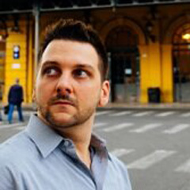

Cuttlefish: Easing the Pain of Configuration
Joe DeVivoErlanger at Basho
Cuttlefish: Easing the Pain of Configuration
Configuring Riak has always been a pain. The app.config and vm.args files are hard to work with for non-Erlang developers. Erlang gets a bad rep for syntax, and while I happen to like it, I don't think it's good for configuration. Cuttlefish is a project I developed for Riak 2.0. It lets you map a sysctl type configuration file to both an app.config and a vm.args file. This allows you to offer your application users a simple configuration syntax, without having to alter your Erlang application's use of application:get_env. https://github.com/basho/cuttlefish
Talk objectives:
I'll show you how Cuttlefish fits in with your application and the Erlang VM ecosystem. We'll walk through Mappings, Translations, and Validations as we develop a simple Cuttlefish schema for an Erlang application. If there's time, we'll also explore more complicated schema elements from Riak 2.0.
Target audience:
Anybody who wants to know more about how configuration works in Riak 2.0. Anybody who wants to make their Erlang application easier to configure and more accessible to users that don't want to learn Erlang to use their application.
SlidesVideo
About Joe
Working in Erlang for years at Basho and CHEF, Joe finally had an excuse to write a gen_fsm from scratch for Chatterbox. Joe's an Emacs poseur, who likes hacking Erlang with EDTS, but occasionally runs scared back to SublimeText 2. Maybe you've heard of him. Joe's been working with Erlang primarily since 2012, at Basho and now CHEF. Twitter: @joedevivo Github: joedevivo